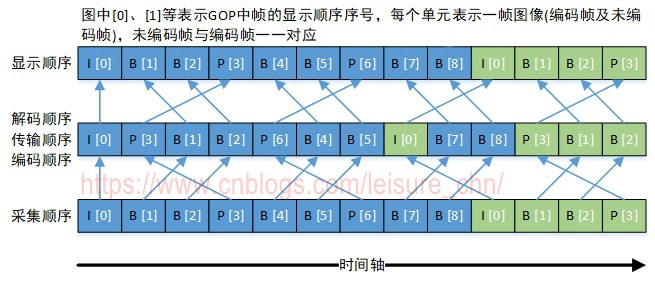

I帧：I帧(Intra-coded picture, 帧内编码帧，常称为关键帧)包含一幅完整的图像信息，属于帧内编码图像，不含运动矢量，在解码时不需要参考其他帧图像。因此在I帧图像处可以切换频道，而不会导致图像丢失或无法解码。I帧图像用于阻止误差的累积和扩散。在闭合式 GOP 中，每个 GOP 的第一个帧一定是 I帧，且当前 GOP 的数据不会参考前后 GOP 的数据。
P帧：P帧(Predictive-coded picture, 预测编码图像帧)是帧间编码帧，利用之前的 I帧 或 P帧进行预测编码。
B帧：B帧(Bi-directionally predicted picture, 双向预测编码图像帧)是帧间编码帧，利用之前和(或)之后的 I帧或 P帧进行双向预测编码。B帧不可以作为参考帧。
B帧具有更高的压缩率，但需要更多的缓冲时间以及更高的 CPU 占用率，因此 B帧适合本地存储以及视频点播，而不适用对实时性要求较高的直播系统。
DTS(Decoding Time Stamp, 解码时间戳)，表示压缩帧的解码时间。
PTS(Presentation Time Stamp, 显示时间戳)，表示将压缩帧解码后得到的原始帧的显示时间。
音频中 DTS 和 PTS 是相同的。视频中由于B帧需要双向预测，B帧依赖于其前和其后的帧，因此含B帧的视频解码顺序与显示顺序不同，即 DTS 与 PTS 不同。当然，不含B帧的视频，其 DTS 和 PTS 是相同的。下图以一个开放式 GOP 示意图为例，说明视频流的解码顺序和显示顺序

采集顺序指图像传感器采集原始信号得到图像帧的顺序。
编码顺序指编码器编码后图像帧的顺序。存储到磁盘的本地视频文件中图像帧的顺序与编码顺序相同。
传输顺序指编码后的流在网络中传输过程中图像帧的顺序。
解码顺序指解码器解码图像帧的顺序。
显示顺序指图像帧在显示器上显示的顺序。
采集顺序与显示顺序相同。编码顺序、传输顺序和解码顺序相同。
以图中“B[1]”帧为例进行说明，“B[1]”帧解码时需要参考“I[0]”帧和“P[3]”帧，因此“P[3]”帧必须比“B[1]”帧先解码。这就导致了解码顺序和显示顺序的不一致，后显示的帧需要先解码。
在 FFmpeg 中，时间基(time_base)是时间戳(timestamp)的单位，时间戳值乘以时间基，可以得到实际的时刻值(以秒等为单位)。例如，如果一个视频帧的 dts 是 40，pts 是 160，其 time_base 是 1/1000 秒，那么可以计算出此视频帧的解码时刻是 40 毫秒(40/1000)，显示时刻是 160 毫秒(160/1000)。FFmpeg 中时间戳(pts/dts)的类型是 int64_t 类型，把一个 time_base 看作一个时钟脉冲，则可把 dts/pts 看作时钟脉冲的计数。
不同的封装格式具有不同的时间基。在 FFmpeg 处理音视频过程中的不同阶段，也会采用不同的时间基。
FFmepg 中有三种时间基，命令行中 tbr、tbn 和 tbc 的打印值就是这三种时间基的倒数：
tbn：对应容器中的时间基。值是 AVStream.time_base 的倒数
tbc：对应编解码器中的时间基。值是 AVCodecContext.time_base 的倒数
tbr：从视频流中猜算得到，可能是帧率或场率(帧率的 2 倍)
测试文件下载(右键另存为)：tnmil3.flv
使用 ffprobe 探测媒体文件格式，如下：
1 2 3 4 5 6 7 8 | ffprobe tnmil3.flvInput #0, flv, from 'tnmil3.flv': Metadata: encoder : Lavf58.20.100 Duration: 00:00:03.60, start: 0.017000, bitrate: 513 kb/s Stream #0:0: Video: h264 (High), yuv420p(progressive), 784x480, 25 fps, 25 tbr, 1k tbn, 50 tbc Stream #0:1: Audio: aac (LC), 44100 Hz, stereo, fltp, 128 kb/s |
关于 tbr、tbn 和tbc 的说明，原文如下，来自 FFmpeg 邮件列表：
1 2 3 4 5 6 7 8 9 10 11 12 13 14 | There are three different time bases for time stamps in FFmpeg. Thevalues printed are actually reciprocals of these, i.e. 1/tbr, 1/tbn and1/tbc.tbn is the time base in AVStream that has come from the container, Ithink. It is used for all AVStream time stamps.tbc is the time base in AVCodecContext for the codec used for aparticular stream. It is used for all AVCodecContext and related timestamps.tbr is guessed from the video stream and is the value users want to seewhen they look for the video frame rate, except sometimes it is twicewhat one would expect because of field rate versus frame rate. |
除以上三种时间基外，FFmpeg 还有一个内部时间基 AV_TIME_BASE (以及分数形式的 AV_TIME_BASE_Q)
1 2 3 4 5 | // Internal time base represented as integer#define AV_TIME_BASE 1000000// Internal time base represented as fractional value#define AV_TIME_BASE_Q (AVRational){1, AV_TIME_BASE} |
AV_TIME_BASE 及 AV_TIME_BASE_Q 用于 FFmpeg 内部函数处理，使用此时间基计算得到时间值表示的是微秒。
av_q2d() 将时间从 AVRational 形式转换为 double 形式。AVRational 是分数类型，double 是双精度浮点数类型，转换的结果单位是秒。转换前后的值基于同一时间基，仅仅是数值的表现形式不同而已。
av_q2d() 实现如下：
1 2 3 4 5 6 7 8 9 | /** * Convert an AVRational to a `double`. * @param a AVRational to convert * @return `a` in floating-point form * @see av_d2q() */static av_q2d(AVRational a){ return a.num / () a.den;} |
av_q2d() 使用方法如下：
1 2 3 4 | AVStream stream;AVPacket packet; packet播放时刻值：timestamp(单位秒) = packet.pts × av_q2d(stream.time_base); packet播放时长值：duration(单位秒) = packet.duration × av_q2d(stream.time_base); |
av_rescale_q() 用于不同时间基的转换，用于将时间值从一种时间基转换为另一种时间基。
1 2 3 4 5 6 7 8 9 10 | /** * Rescale a 64-bit integer by 2 rational numbers. * * The operation is mathematically equivalent to `a × bq / cq`. * * This function is equivalent to av_rescale_q_rnd() with #AV_ROUND_NEAR_INF. * * @see av_rescale(), av_rescale_rnd(), av_rescale_q_rnd() */int64_t av_rescale_q(int64_t a, AVRational bq, AVRational cq) av_const; |
av_packet_rescale_ts() 用于将 AVPacket 中各种时间值从一种时间基转换为另一种时间基。
1 2 3 4 5 6 7 8 9 10 11 12 | /** * Convert valid timing fields (timestamps / durations) in a packet from one * timebase to another. Timestamps with unknown values (AV_NOPTS_VALUE) will be * ignored. * * @param pkt packet on which the conversion will be performed * @param tb_src source timebase, in which the timing fields in pkt are * expressed * @param tb_dst destination timebase, to which the timing fields will be * converted */av_packet_rescale_ts(AVPacket *pkt, AVRational tb_src, AVRational tb_dst); |
容器中的时间基(AVStream.time_base，3.2节中的 tbn)定义如下：
1 2 3 4 5 6 7 8 9 10 11 12 13 14 15 16 17 | typedef AVStream { ...... /** * This is the fundamental unit of time (in seconds) in terms * of which frame timestamps are represented. * * decoding: set by libavformat * encoding: May be set by the caller before avformat_write_header() to * provide a hint to the muxer about the desired timebase. In * avformat_write_header(), the muxer will overwrite this field * with the timebase that will actually be used for the timestamps * written into the file (which may or may not be related to the * user-provided one, depending on the format). */ AVRational time_base; ......} |
AVStream.time_base 是 AVPacket 中 pts 和 dts 的时间单位，输入流与输出流中 time_base 按如下方式确定：
对于输入流：打开输入文件后，调用 avformat_find_stream_info() 可获取到每个流中的 time_base
对于输出流：打开输出文件后，调用 avformat_write_header() 可根据输出文件封装格式确定每个流的 time_base 并写入输出文件中
不同封装格式具有不同的时间基，在转封装(将一种封装格式转换为另一种封装格式)过程中，时间基转换相关代码如下：
1 2 3 4 | av_read_frame(ifmt_ctx, &pkt);pkt.pts = av_rescale_q_rnd(pkt.pts, in_stream->time_base, out_stream->time_base, AV_ROUND_NEAR_INF|AV_ROUND_PASS_MINMAX);pkt.dts = av_rescale_q_rnd(pkt.dts, in_stream->time_base, out_stream->time_base, V_ROUND_NEAR_INF|AV_ROUND_PASS_MINMAX);pkt.duration = av_rescale_q(pkt.duration, in_stream->time_base, ut_stream->time_base); |
下面的代码具有和上面代码相同的效果：
1 2 3 | // 从输入文件中读取packetav_read_frame(ifmt_ctx, &pkt);// 将packet中的各时间值从输入流封装格式时间基转换到输出流封装格式时间基 av_packet_rescale_ts(&pkt, in_stream->time_base, out_stream->time_base); |
这里流里的时间基 in_stream->time_base 和 out_stream->time_base，是容器中的时间基，就是3.2节中的 tbn。
例如，flv 封装格式的 time_base 为 {1,1000}，ts 封装格式的 time_base 为 {1,90000}
我们编写程序将 flv 封装格式转换为 ts 封装格式，抓取原文件(flv)的前四帧显示时间戳：
1 2 3 4 5 6 7 8 9 10 11 12 13 14 15 16 17 18 | ffprobe -show_frames -select_streams v tnmil3.flv | findstr pkt_ptsInput #0, flv, from 'tnmil3.flv': Metadata: encoder : Lavf58.20.100 Duration: 00:00:03.60, start: 0.017000, bitrate: 513 kb/s Stream #0:0: Video: h264 (High), yuv420p(progressive), 784x480, 25 fps, 25 tbr, 1k tbn, 50 tbc Stream #0:1: Audio: aac (LC), 44100 Hz, stereo, fltp, 128 kb/spkt_pts=80pkt_pts_time=0.080000pkt_pts=120pkt_pts_time=0.120000pkt_pts=160pkt_pts_time=0.160000pkt_pts=200pkt_pts_time=0.200000... |
再抓取转换的文件(ts)的前四帧显示时间戳：
1 2 3 4 5 6 7 8 9 10 11 12 13 14 15 16 17 18 | ffprobe -show_frames -select_streams v tnmil3.ts | grep pkt_pts ffprobe version 4.1 Copyright (c) 2007-2018 the FFmpeg developersInput #0, mpegts, from 'tnmil3.ts': Duration: 00:00:03.58, start: 0.017000, bitrate: 619 kb/s Program 1 Metadata: service_name : Service01 service_provider: FFmpeg Stream #0:0[0x100]: Video: h264 (High) ([27][0][0][0] / 0x001B), yuv420p(progressive), 784x480, 25 fps, 25 tbr, 90k tbn, 50 tbc Stream #0:1[0x101]: Audio: aac (LC) ([15][0][0][0] / 0x000F), 44100 Hz, stereo, fltp, 127 kb/spkt_pts=7200pkt_pts_time=0.080000pkt_pts=10800pkt_pts_time=0.120000pkt_pts=14400pkt_pts_time=0.160000pkt_pts=18000pkt_pts_time=0.200000 |
可以发现，对于同一个视频帧，它们时间基 (tbn) 不同因此时间戳 (pkt_pts) 也不同，但是计算出来的时刻值 (pkt_pts_time) 是相同的。
看第一帧的时间戳，计算关系：80×{1,1000} == 7200×{1,90000} == 0.080000
编解码器中的时间基(AVCodecContext.time_base，3.2节中的 tbc)定义如下：
1 2 3 4 5 6 7 8 9 10 11 12 13 14 15 16 17 18 19 20 21 22 23 24 25 26 | typedef struct AVCodecContext { ...... /** * This is the fundamental unit of time (in seconds) in terms * of which frame timestamps are represented. For fixed-fps content, * timebase should be 1/framerate and timestamp increments should be * identically 1. * This often, but not always is the inverse of the frame rate or field rate * for video. 1/time_base is not the average frame rate if the frame rate is not * constant. * * Like containers, elementary streams also can store timestamps, 1/time_base * is the unit in which these timestamps are specified. * As example of such codec time base see ISO/IEC 14496-2:2001(E) * vop_time_increment_resolution and fixed_vop_rate * (fixed_vop_rate == 0 implies that it is different from the framerate) * * - encoding: MUST be set by user. * - decoding: the use of this field for decoding is deprecated. * Use framerate instead. */ AVRational time_base; ......} |
上述注释指出，AVCodecContext.time_base 是帧率(视频帧)的倒数，每帧时间戳递增 1，那么 tbc 就等于帧率。编码过程中，应由用户设置好此参数。解码过程中，此参数已过时，建议直接使用帧率倒数用作时间基。
这里有一个问题：按照此处注释说明，帧率为 25 的视频流，tbc 理应为 25，但实际值却为50，不知作何解释？是否 tbc 已经过时，不具参考意义？
根据注释中的建议，实际使用时，在视频解码过程中，我们不使用 AVCodecContext.time_base，而用帧率倒数作时间基，在视频编码过程中，我们将 AVCodecContext.time_base 设置为帧率的倒数。
视频按帧播放，所以解码后的原始视频帧时间基为 1/framerate。
视频解码过程中的时间基转换处理：
1 2 3 4 5 6 7 8 9 10 11 12 13 14 15 16 | AVFormatContext *ifmt_ctx;AVStream *in_stream;AVCodecContext *dec_ctx;AVPacket packet;AVFrame *frame;// 从输入文件中读取编码帧av_read_frame(ifmt_ctx, &packet);// 时间基转换int raw_video_time_base = av_inv_q(dec_ctx->framerate);av_packet_rescale_ts(packet, in_stream->time_base, raw_video_time_base);// 解码avcodec_send_packet(dec_ctx, packet)avcodec_receive_frame(dec_ctx, frame); |
视频编码过程中的时间基转换处理：
1 2 3 4 5 6 7 8 9 10 11 12 13 14 15 16 17 18 | AVFormatContext *ofmt_ctx;AVStream *out_stream;AVCodecContext *dec_ctx;AVCodecContext *enc_ctx;AVPacket packet;AVFrame *frame;// 编码avcodec_send_frame(enc_ctx, frame);avcodec_receive_packet(enc_ctx, packet);// 时间基转换packet.stream_index = out_stream_idx;enc_ctx->time_base = av_inv_q(dec_ctx->framerate);av_packet_rescale_ts(&opacket, enc_ctx->time_base, out_stream->time_base);// 将编码帧写入输出媒体文件av_interleaved_write_frame(o_fmt_ctx, &packet); |
音频按采样点播放，所以解码后的原始音频帧时间基为 1/sample_rate
音频解码过程中的时间基转换处理：
1 2 3 4 5 6 7 8 9 10 11 12 13 14 15 16 | AVFormatContext *ifmt_ctx;AVStream *in_stream;AVCodecContext *dec_ctx;AVPacket packet;AVFrame *frame;// 从输入文件中读取编码帧av_read_frame(ifmt_ctx, &packet);// 时间基转换int raw_audio_time_base = av_inv_q(dec_ctx->sample_rate);av_packet_rescale_ts(packet, in_stream->time_base, raw_audio_time_base);// 解码avcodec_send_packet(dec_ctx, packet)avcodec_receive_frame(dec_ctx, frame); |
音频编码过程中的时间基转换处理：
1 2 3 4 5 6 7 8 9 10 11 12 13 14 15 16 17 18 | AVFormatContext *ofmt_ctx;AVStream *out_stream;AVCodecContext *dec_ctx;AVCodecContext *enc_ctx;AVPacket packet;AVFrame *frame;// 编码avcodec_send_frame(enc_ctx, frame);avcodec_receive_packet(enc_ctx, packet);// 时间基转换packet.stream_index = out_stream_idx;enc_ctx->time_base = av_inv_q(dec_ctx->sample_rate);av_packet_rescale_ts(&opacket, enc_ctx->time_base, out_stream->time_base);// 将编码帧写入输出媒体文件av_interleaved_write_frame(o_fmt_ctx, &packet); |
参考资料：